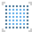
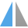
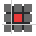

Settings
The following options are available from the Toolbar.
Defaults:
- Synchronize defaults from selection—the default settings are updated to those of the currently selected object.
- Revert defaults—synchronized defaults are reverted to saved defaults. If an object is currently selected, its attributes revert to the default settings.
Viewing mode:
- Pixel viewing mode—activates Pixel mode to display vector designs as individual pixels.
-  Retina pixel viewing mode—activates Pixel (Retina) mode to display vector designs as individual pixels.
- Outline drawing mode—activates Outline mode to display design as paths only.
Order:
- Move to Back—repositions the selected object(s) at the bottom of the layer. Alternatively, repositions the selected layer(s) at the bottom of the Layers panel.
- Back One—moves the selected object(s) down one position in the layer. Alternatively, moves the selected layer(s) down one position in the Layers panel.
- Forward One—moves the selected object(s) up one position in the layer. Alternatively, moves the selected layer(s) up one position in the Layers panel.
- Move to Front—repositions the selected object(s) at the top of the layer. Alternatively, repositions the selected layer(s) at the top of the Layers panel.
Transforms:
-  Flip Horizontal—flips the selected object(s) left to right.
- Flip Vertical—flips the selected object(s) top to bottom.
- Rotate Anti-clockwise—rotates the selected object(s) to the left by one 90° increment.
- Rotate Clockwise—rotates the selected object(s) to the right by one 90° increment.
Align:
- Alignment—displays a pop-up dialog allowing you to align and distribute selected object(s).
Snapping:
-  Force Pixel Alignment—when selected (default), vector content will snap to full pixels when created, moved or modified. If this option is off, vector content can occupy partial pixels.
- Move by whole pixels—allows you to constrain the movement of vector objects, nodes and handles to whole pixels.
 Snapping—when selected, selected objects will obey the snapping rules defined by the current snapping options. If this option is off (default), snapping is disabled.
Snapping—when selected, selected objects will obey the snapping rules defined by the current snapping options. If this option is off (default), snapping is disabled.- Snapping options—customize settings from the pop-up menu.
Operations:
- Add—creates a new object from the sum of the selected objects.
- Subtract—removes sections from the lowest object based on the overlap with objects higher up in the selection. All other selected objects are discarded.
 Intersect—creates a new object from the overlapping sections of selected objects.
Intersect—creates a new object from the overlapping sections of selected objects.- Xor—merges selected objects into a composite object with transparent area where filled regions overlap.
- Divide—splits object areas into separate objects; the object from the intersecting area retains the color of the upper object.
Insert Target:
- Insert behind the selection—when selected, new objects are added below the currently selected object(s).
- Insert at the top of the layer—when selected, new objects are added at the top of the layer.
- Insert inside the selection—when selected, new objects are added inside the current selection.
Account:
 My Account—registers your app, accesses your Affinity account and synchronizes with purchased content. The icon will show green when signed into your account.
My Account—registers your app, accesses your Affinity account and synchronizes with purchased content. The icon will show green when signed into your account.